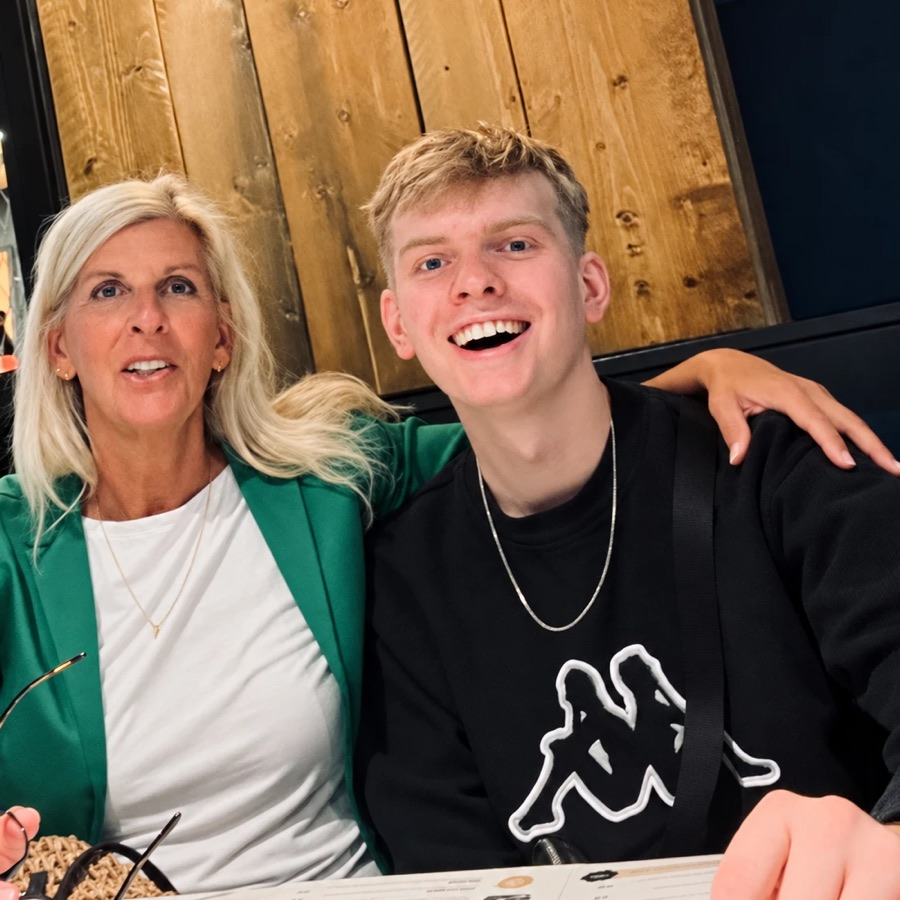
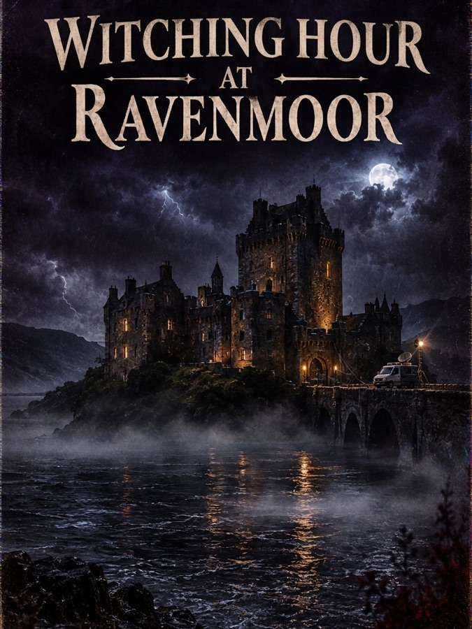
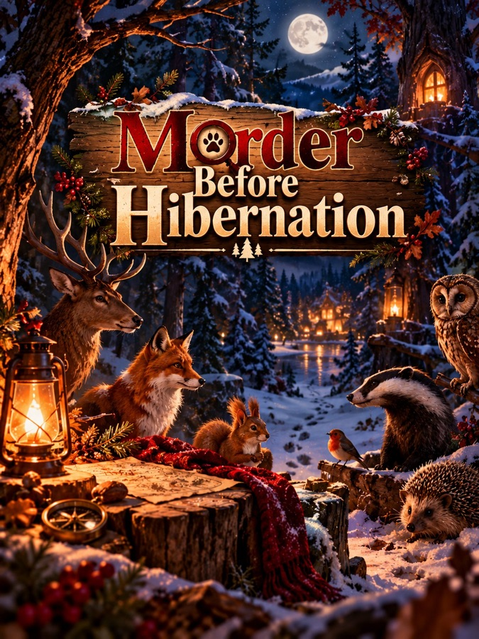

The recipes from my videos – free.
Plus the apron I cook in and murder mystery dinners to cook them for.
@constantinteck · 100M+ views
New from the videos
All recipes


Murder mystery dinner
9 murder mystery dinners – and a menu idea for each
Print the case, cook from my free recipes, and find out which of your guests did it.
- 5–12 players
- approx. 3–4 hrs
- Instant PDF
- €8.99 per case




- Buy & print – instant PDF after payment. Print it at home or play from your phones.
- Cook the menu – I've picked a starter, main and dessert from my free recipes for every case – or cook your own.
- Solve the case – everyone gets a role, the clues come out between the courses.
A menu idea for every case: three courses from my videos that fit the story – free on this site, not part of the PDF. How the evening works →